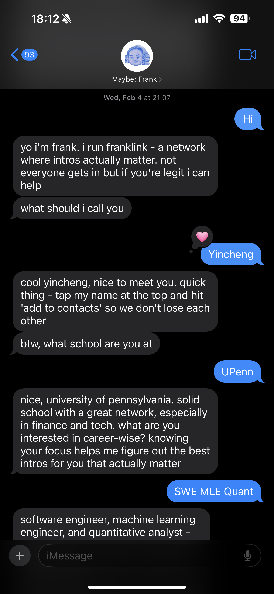
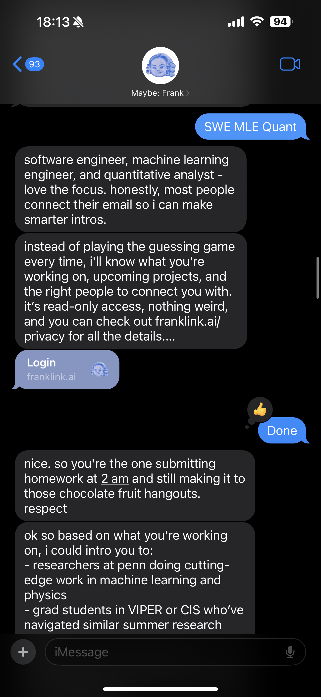
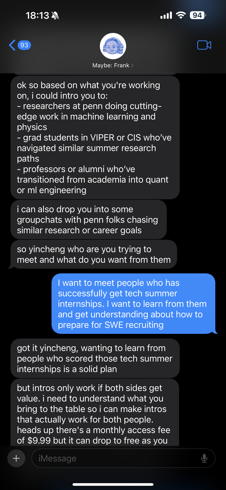
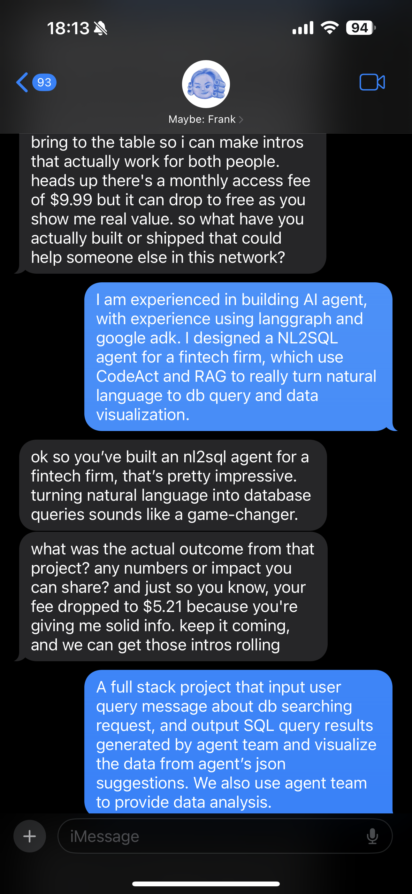
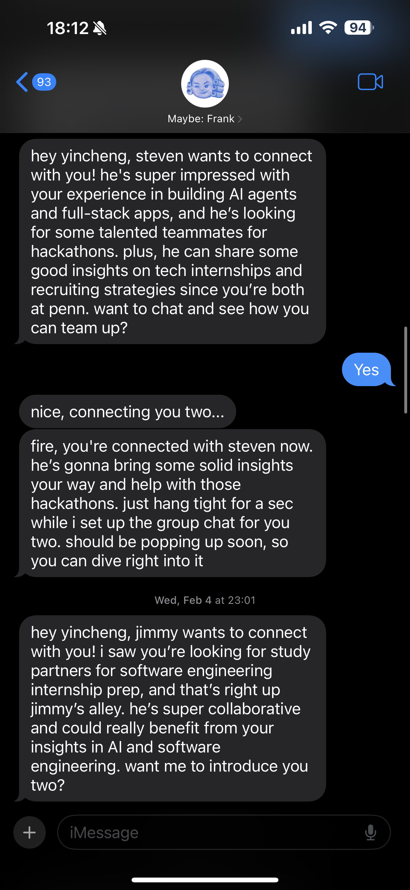
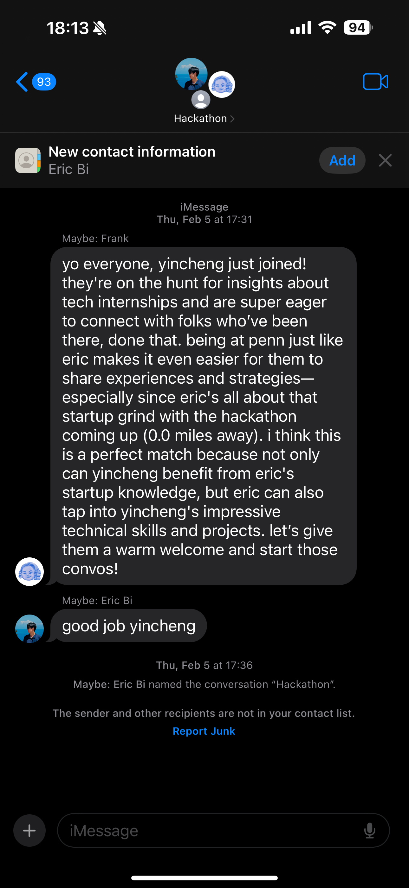
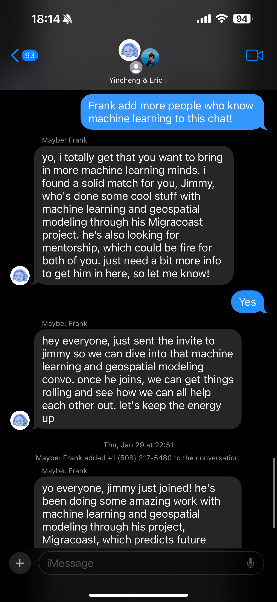

Franklink
GitHub Co-Founder & Tech Lead 5K+ registered users
Traditional professional networks make you download an app, build a profile, and message strangers. Franklink inverts that. There is no app and no sign-up form. You text a contact named Frank, and a multi-agent system onboards you, learns what you need and what you can offer, and introduces you to the right people — one-on-one and in AI-formed group chats. The surface is a single text thread; behind it is a distributed, event-driven platform.
What follows is the whole experience, in order, as it happens inside one iMessage conversation.

01Onboarding
Meet your AI concierge
Frank reads like texting a friend. It learns your background, interests, and goals through ordinary conversation — no form to fill out, nothing to install.

02Onboarding
Privacy-first login
Read-only email access through OAuth lets Frank learn your professional context without storing sensitive data. The connection is scoped and revocable.

03Intent
Say what you need
Tell Frank what you are looking for — interview advice, co-founders, a mentor. The system captures those demand signals and embeds them for semantic matching.

04Intent
Show what you offer
Share your projects and experience. Frank extracts these as value signals and stores them as embeddings, so other members can find you by what you bring to the table.

05Networking
Introductions arrive in iMessage
Frank delivers personalized introductions straight to your inbox. People who want to connect reach you through AI-curated messages — still no app, just a text.

06Networking
The network grows
As new members join, Frank surfaces the relevant introductions and keeps your contacts current. The network grows organically through real-time community announcements.

07Group formation
AI-formed group chats
Ask Frank to find more people with shared interests and it spins up a multi-person group chat, complete with icebreakers drawn from a knowledge graph of members. Sometimes the first chat becomes the startup.
How it works
A message travels from iMessage through a gateway into a Kafka event pipeline, lands in a pool of stateless agent workers, and returns — typically within a couple of seconds. A conductor agent reads each message, decides what needs to happen, and dispatches specialized sub-agents that onboard, extract need and value, search a member knowledge graph, and broker introductions.